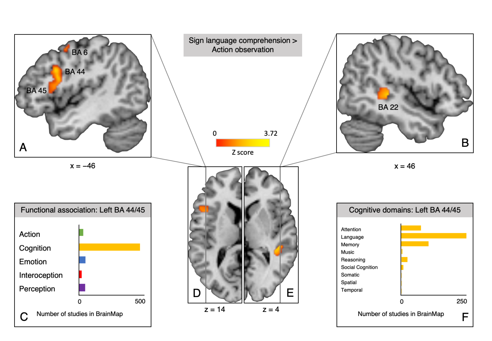

The neural basis of sign language processing in deaf signers: An Activation Likelihood Estimation meta-analysis
 Significant clusters for linguistic processing in sign language comprehension and functional attributions in the BrainMap database.
Significant clusters for linguistic processing in sign language comprehension and functional attributions in the BrainMap database.
The neural basis of sign language processing in deaf signers: An Activation Likelihood Estimation meta-analysis
Zusammenfassung
The neurophysiological response during processing of sign language (SL) has been studied since the advent of Positron Emission Tomography (PET) and functional Magnetic Resonance Imaging (fMRI). Nevertheless, the neural substrates of SL remain subject to debate, especially with regard to involvement and relative lateralization of SL processing without production in (left) inferior frontal gyrus (IFG; e.g., Campbell, MacSweeney, & Waters, 2007; Emmorey, 2006, 2015). Our present contribution is the first to address these questions meta-analytically, by exploring functional convergence on the whole-brain level using previous fMRI and PET studies of SL processing in deaf signers.
We screened 163 records in PubMed and Web of Science to identify studies of SL processing in deaf signers conducted with fMRI or PET that reported foci data for one of the two whole-brain contrasts: (1) “SL processing vs. control” or (2) “SL processing vs. low-level baseline”. This resulted in a total of 21 studies reporting 23 experiments matching our selection criteria. We manually extracted foci data and performed a coordinate-based Activation Likelihood Estimation (ALE) analysis using GingerALE (Eickhoff et al., 2009). Our selection criteria and the ALE method allow us to identify regions that are consistently involved in processing SL across studies and tasks.
Our analysis reveals that processing of SL stimuli of varying linguistic complexity engages widely distributed bilateral fronto-occipito-temporal networks in deaf signers. We find significant clusters in both hemispheres, with the largest cluster (5240 mm3) being located in left IFG, spanning Broca’s region (posterior BA 45 and the dorsal portion of BA 44). Other clusters are located in right middle and inferior temporal gyrus (BA 37), right IFG (BA 45), left middle occipital gyrus (BA 19), right superior temporal gyrus (BA 22), left precentral and middle frontal gyrus (BA 6 and 8), as well as left insula (BA 13). On these clusters, we calculated lateralization indices using hemispheric and anatomical masks: SL comprehension is slightly left-lateralized globally, and strongly left-lateralized in Broca’s region. Sub-regionally, left-lateralization is strongest in BA 44 (Table 1).
Next, we performed a contrast analysis between SL and an independent dataset of action observation in hearing non-signers (Papitto, Friederici, & Zaccarella, 2019) to determine which regions are associated with processing of human actions and movements irrespective of the presence of linguistic information. Only studies of observation of non-linguistic manual actions were included in the final set (n = 26), for example, excluding the handling of objects. Significant clusters involved in the linguistic aspects of SL comprehension were found in left Broca’s region (centered in dorsal BA 44), right superior temporal gyrus (BA 22), and left middle frontal and precentral gyrus (BA 6 and 8; Figure 1A, B, D and E). Meta-analytic connectivity modelling for the surviving cluster in Broca’s region using the BrainMap database then revealed that it is co-activated with the classical language network and functionally primarily associated with cognition and language processing (Figure 1C and D).
In line with studies of spoken and written language processing (Zaccarella, Schell, & Friederici, 2017; Friederici, Chomsky, Berwick, Moro, & Bolhuis, 2017), our meta-analysis points to Broca’s region and especially left BA 44 as a hub in the language network that is involved in language processing independent of modality. Right IFG activity is not language-specific but may be specific to the visuo-gestural modality (Campbell et al., 2007).
Table 1: Lateralisation indices (AveLI, baseLI; Matsuo et al., 2012) and total number of active voxels in anatomical ROIs (maximum probability maps from Amunts et al., 1999) in left and right hemisphere (LH/RH).
| Mask | AveLI | baseLI | Number of voxels LH | Number of voxels RH |
| BA 44 | 0.78 | 0.65 | 549 | 131 |
| BA 45 | 0.54 | 0.25 | 389 | 282 |
| Broca’s region / BA 44 and BA 45 | 0.68 | 0.46 | 645 | 282 |
| Entire hemisphere | 0.24 | 0.20 | 1196 | 808 |
Figure 1: Significant clusters of sign language comprehension > action observation contrast and functional attributions in the BrainMap database. A. Sagittal plane at x = −46 showing the largest cluster (2336 mm3) in left IFG spanning BA 44 and BA 45, as well as parts of another smaller cluster (616 mm3) in precentral gyrus (BA 6). B. Sagittal plane at x = 46 showing the cluster in right STG (BA 22). C. Number of studies in the BrainMap database that report peaks in voxels of the cluster in left IFG (BA 44 and 45) organized by behavioral domain. D. Transverse plane of the left hemisphere at z = −14. E. Transverse plane of the right hemisphere at z = 4. F. Number of studies in the BrainMap database that report peaks in voxels of the cluster in left IFG (BA 44 and 45) organized by behavioral sub-domain within the domain of cognition.

References
Amunts, K., Schleicher, A., Bürgel, U., Mohlberg, H., Uylings, H. B., & Zilles, K. (1999). Broca’s region revisited: Cytoarchitecture and intersubject variability. The Journal of Comparative Neurology, 412(2), 319-341.
Campbell, R., MacSweeney, M., & Waters, D. (2007). Sign language and the brain: A review. Journal of Deaf Studies and Deaf Education, 13(1), 3-20. doi: 10.1093/deafed/enm035
Eickhoff, S. B., Laird, A. R., Grefkes, C., Wang, L. E., Zilles, K., & Fox, P. T. (2009). Coordinate-based activation likelihood estimation meta-analysis of neuroimaging data: A random-effects approach based on empirical estimates of spatial uncertainty. Human Brain Mapping, 30(9), 2907-2926. doi: 10.1002/hbm.20718
Emmorey, K. (2006). The role of Broca’s area in sign language. In Y. Grodzinsky & K. Amunts (Eds.), Broca’s region (p. 169-184). Oxford, England: Oxford UP.
Emmorey, K. (2015). The neurobiology of sign language. In A. W. Toga, P. Bandettini, P. Thompson, & K. Friston (Eds.), Brain mapping: An encyclopedic reference (Vol. 3, p. 475-479). London, England: Academic Press. doi: 10.1016/B978-0-12-397025-1.00272-4
Friederici, A. D., Chomsky, N., Berwick, R. C., Moro, A., & Bolhuis, J. J. (2017). Language, mind and brain. Nature Human Behaviour. doi: 10.1038/s41562-017-0184-4
Matsuo, K., Chen, S.-H. A., & Tseng, W.-Y. I. (2012). AveLI: A robust lateralization index in functional magnetic resonance imaging using unbiased threshold-free computation. Journal of Neuroscience Methods, 205(1), 119-129. doi: 10.1016/j.jneumeth.2011.12.020
Papitto, G., Friederici, A. D., & Zaccarella, E. (2019). A neuroanatomical comparison of action domains using Activation Likelihood Estimation meta-analysis [Unpublished Manuscript, Max Planck Institute for Human Cognitive & Brain Sciences]. Leipzig, Germany.
Zaccarella, E., Schell, M., & Friederici, A. D. (2017). Reviewing the functional basis of the syntactic Merge mechanism for language: A coordinate-based activation likelihood estimation meta-analysis. Neuroscience & Biobehavioral Reviews, 80, 646-656. doi: 10.1016/j.neubiorev.2017.06.011